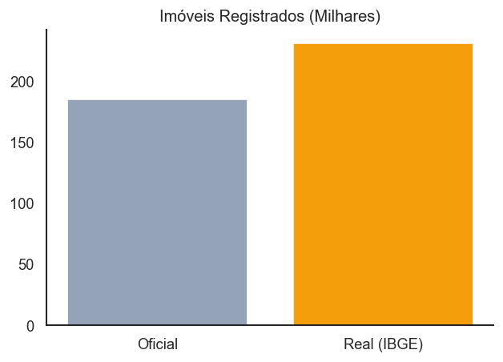
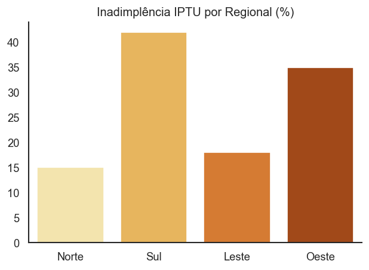
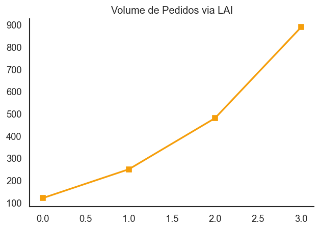
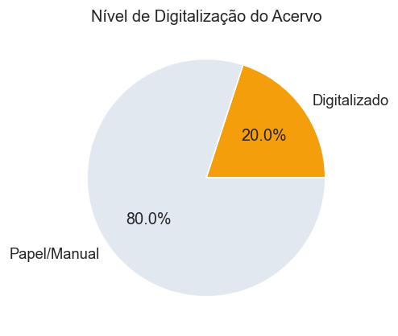
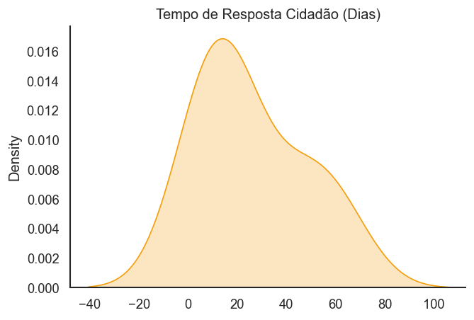

O abismo entre o CEP oficial e o exercício pleno da cidadania.
Integrantes: Kemylly Monique, Steffany Natilin, Vitórya Ferreira
Diagnóstico da cobertura cadastral em bairros periféricos. A falta de registros oficiais impede o direcionamento eficiente de políticas públicas.



A correlação direta entre o índice de georreferenciamento de um bairro e a destinação de investimentos públicos em infraestrutura.


Exemplo do Ribeirão do Lipa: O território existe, mas os dados não.
A Lei de Acesso à Informação representa importante marco na promoção da transparência e accountability, obrigando o poder público a divulgar dados de interesse geral sem que haja requisição [6].
Como aplicar transparência ativa em uma área onde o Estado sequer tem o registro das ruas e lotes? A falta de dados primários impede o cumprimento da LAI.
Bairros inteiros não constam nos sistemas oficiais (SIGCuiabá). Essa ausência gera um efeito cascata: sem CEP, o cidadão não consegue abrir conta, receber correspondência ou acessar serviços online.
Impossibilidade técnica de realizar planejamento urbano, alocar recursos do SUS ou dimensionar vagas escolares, pois não há dados confiáveis sobre a população residente.
Implementar um sistema de Mapeamento Digital Colaborativo, integrando dados de satélite com levantamentos in loco.
Recursos do Programa de Modernização Administrativa e Geoprocessamento.
A verba deve ser estritamente vinculada ao mapeamento das periferias invisíveis. Sem mecanismos de compliance, este recurso corre o risco de ser realocado para atualização cadastral apenas em áreas nobres (visando maior arrecadação de IPTU).
Garantir que a verba seja aplicada onde é mais necessária.
Impedimento legal de remanejamento da verba de R$ 4,2M para outras pastas sem justificativa técnica e aprovação legislativa.
Contratação de consultoria externa para atestar se os mapas gerados estão sendo, de fato, integrados aos sistemas de saúde e educação.
A fiscalização exercida por instituições como TCE-MT, Ministério Público e CGU é fundamental para a manutenção da qualidade e legalidade na gestão pública [67].
O controle externo atua não apenas na punição, mas na exigência de que as prefeituras mantenham seus cadastros atualizados para o correto recebimento de repasses federais.
Atualmente, o controle atua apenas após denúncias. Há uma grave falta de integração; o TCE-MT exige prestação de contas, mas a base de dados do município é defasada, gerando auditorias sobre uma "cidade fictícia" que ignora as periferias.
Criar um Núcleo de Dados Abertos vinculado à Secretaria de Planejamento, com interface direta e automatizada com o TCE-MT.
Qualquer novo loteamento regularizado ou área mapeada deve ser automaticamente atualizada no sistema de prestação de contas, garantindo que o controle externo enxergue a cidade real.
Garantir o cumprimento do Artigo 8º da Lei de Acesso à Informação (Transparência Ativa).
Disponibilizar ativamente o formato Shapefile, CSV e KML do zoneamento da cidade. Pesquisadores, ONGs e jornalistas precisam ter acesso irrestrito aos dados territoriais para auxiliar na proposição de políticas.
O direito de "existir no sistema" é o primeiro passo para o acesso à saúde, educação e segurança pública.
Mapeamento massivo com a verba de R$ 4,2M.
Controle sobre a execução do contrato de mapeamento.
Dados abertos e integrados com os órgãos de controle.